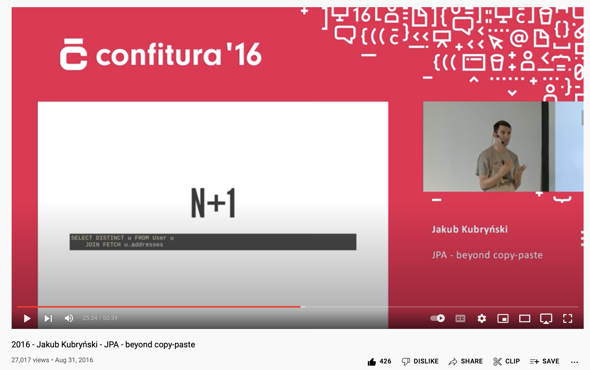
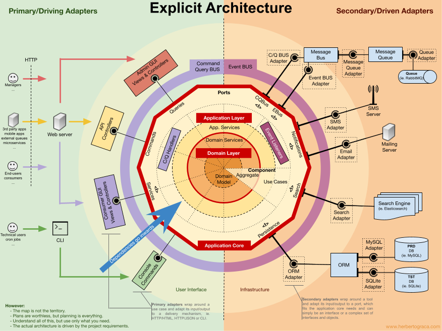
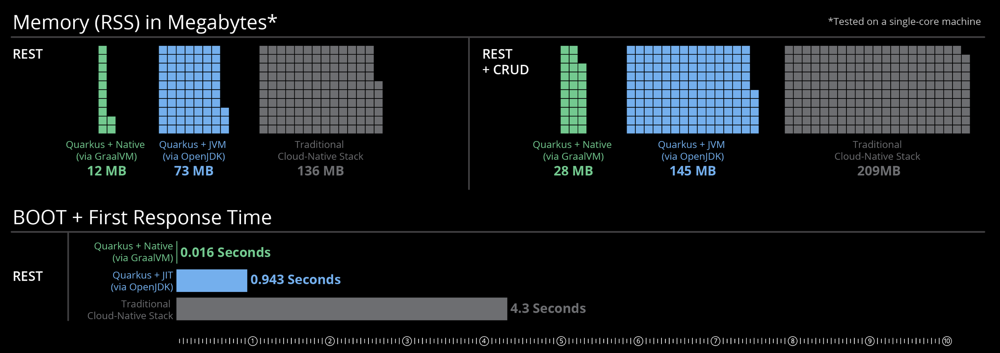

Be Assertive with Spring
Grzegorz Piwowarek
@pivovarit

{ 4comprehension.com }
Lead Architect @ Hazelcast
Trainer @ Bottega IT Minds
@pivovarit
"Regarding opinionated / unopinionated frameworks, I think they appeal to different types of developers. I now have 20 years of experience. In my first 5-8 years I loved frameworks like Spring. However, as I gained more experience, I felt I needed a framework's "opinion" less and less. Now I avoid them."https://www.infoq.com/news/2018/10/the-road-to-micronaut-1.0
Frameworks vs Libraries
Frameworks
Puts work into a frame
http://tomasp.net/blog/2015/library-frameworks/
Frameworks exist beyond software
Franchizes
Project Management Methodologies (for example, Scrum)
Frameworks
Take time to learn and outdate quickly
Go out of fashion/get abandoned
Increase complexity/weight
Force you to keep up
Require expert help
Own you
Meanwhile in Scala ecosystem...
(...) It’s not a web-framework but rather a more general toolkit for providing and consuming HTTP-based services.https://doc.akka.io/docs/akka-http/current/introduction.html#philosophy
"All non-trivial abstractions, to some degree, are leaky."https://www.joelonsoftware.com/2002/11/11/the-law-of-leaky-abstractions/
Frameworks' Internals
- Runtime reflection
- Classpath scanning
- Thread-locals
- Runtime annotation-processing
- Proxies/AOP
"The Meaning of Life", Monty Python
Can you spot an issue? #1
import org.springframework.transaction.annotation.Transactional;
class UserService {
// ...
@Transactional
private void createUser(User user) {
// ...
}
}
@Transactional doesn't work with private methods
Can you spot an issue? #2
import org.springframework.transaction.annotation.Transactional;
class UserService {
// ...
public void createUser(User user) {
createCredentials(user.getId());
// ...
}
@Transactional
public void createCredentials(Integer id) {
// ...
}
}
@Transactional doesn't work when called by another method from the same class
Spring-native Solution
class UserService {
private final ApplicationContext applicationContext;
private volatile UserService self;
public UserService(ApplicationContext applicationContext) {
this.applicationContext = applicationContext;
}
@PostConstruct
private void init() {
self = applicationContext.getBean(UserService.class);
}
// ...
public void createUser(User user) {
self.createCredentials(user.getId());
// ...
}
@Transactional
public void createCredentials(Integer id) {
// ...
}
}
"Scala programmer confronts Java project that uses Maven, Spring, and Hibernate" - Salvador Dali, oil painting, 1946https://twitter.com/progpaintings/status/723276501081190400
Magic-less Solution
class UserService {
private final TransactionTemplate transactionTemplate;
public UserService(TransactionTemplate transactionTemplate) {
this.transactionTemplate = transactionTemplate;
}
public void createUser(User user) {
transactionTemplate.executeWithoutResult(txStatus -> {
createCredentials(user.getId());
});
}
private void createCredentials(Integer id) {
// ...
}
}
Dependency Hell
Common when using shared modules
Dependency hell is a colloquial term for the frustration of some software users who have installed software packages which have dependencies on specific versions of other software packages.https://en.wikipedia.org/wiki/Dependency_hell
Zero-Dependencies, duh!
...
org.assertj
assertj-core
${assertj.version}
test
Not that easy to apply in practice
... but internal dependencies can be shaded*
This and other architectural decisions can be enforced
arch-unit
import static com.tngtech.archunit.lang.syntax.ArchRuleDefinition.classes;
@Test
void shouldHaveZeroDependencies() {
classes()
.that().resideInAPackage("com.pivovarit.collectors")
.should()
.onlyDependOnClassesThat()
.resideInAnyPackage("com.pivovarit.collectors", "java..")
.as("the library should depend only on core Java classes")
.because("so that users don't experience dependency hell")
.check(classes);
}
@Test
void shouldHaveSinglePackage() {
classes()
.should().resideInAPackage("com.pivovarit.collectors")
.check(classes);
}
Another leaky abstraction: ORM
JPA/HibernateOften seen: domain full of framework-specific annotations
package com.pivovarit.domain;
import javax.persistence.Column;
import javax.persistence.Entity;
@Entity
public class User {
private Long id;
@Column
private String name;
}
Not really a problem as long as the model is simple and graspable
@OneToMany(@HowManyDBADoYouNeedToChangeALightBulb)
@OneToManyMore @AnyOne @AnyBody
@YouDoNotTalkAboutOneToMany // Fightclub, LOL
@TweakThisWithThat(
tweak = {
@TweakID(name = "id", preferredValue = 1839),
@TweakID(name = "test", preferredValue = 839),
@TweakID(name = "test.old", preferredValue = 34),
},
inCaseOf = {
@ConditionalXMLFiltering(run = 5),
}
)
@ManyToMany @Many @AnnotationsTotallyRock @DeclarativeProgrammingRules @NoMoreExplicitAlgorithms
@Fetch @FetchMany @FetchWithDiscriminator(name = "no_name")
@SeveralAndThenNothing @MaybeThisDoesSomething
@JoinTable(joinColumns = {
@JoinColumn(name = "customer_id", referencedColumnName = "id")
})
@DoesThisEvenMeanAnything @DoesAnyoneEvenReadThis
@PrefetchJoinWithDiscriminator @JustTrollingYouKnow @LOL
@IfJoiningAvoidHashJoins @ButUseHashJoinsWhenMoreThan(records = 1000)
@XmlDataTransformable @SpringPrefechAdapter
private Collection employees;
JPA Beyond Copy-Paste
https://youtu.be/UPWkpl5PL_w
SQL is complete and self-sufficient, too bad that not type-safe...
String sql = create
.select(BOOK.TITLE, AUTHOR.FIRST_NAME, AUTHOR.LAST_NAME)
.from(BOOK)
.join(AUTHOR).on(BOOK.AUTHOR_ID.eq(AUTHOR.ID))
.where(BOOK.PUBLISHED_IN.eq(1948))
.getSQL();
https://www.jooq.org
Kotlin Exposed
fun findLastRentalId(customerId: CustomerId): RentalId? =
RentalTable
.select { RentalTable.customerId eq customerId.value }
.orderBy(RentalTable.startDate, true)
.map { RentalId(it[RentalTable.id]) }
.firstOrNull()
https://github.com/JetBrains/Exposed
JdbcTemplate
@Override
public Collection<Movie> findAll() {
return jdbcTemplate.query("SELECT * FROM movie",
JdbcTemplateMovieRepository::mapper);
}
private static Movie mapper(ResultSet resultSet, int i)
throws SQLException {
return new Movie(new MovieId(
resultSet.getLong("id")),
resultSet.getString("title"),
MovieType.valueOf(resultSet.getString("type")));
}
Let's look again
package com.pivovarit.domain;
import javax.persistence.Column;
import javax.persistence.Entity;
@Entity
public class PersistedUser {
private Long id;
@Column
private String name;
}
ORM as plugin
package com.pivovarit.domain;
public class User {
private final Long id;
private final String name;
}
package com.pivovarit.persistence;
import javax.persistence.Column;
import javax.persistence.Entity;
@Entity
public class PersistedUser {
private Long id;
@Column
private String name;
}
Spring
import org.springframework.*;
@Component
public class FooFacade {
@Autowired
private FooService fooService;
@PostConstruct
public void foo() {
fooService.foo();
}
}
public static void main(String[] args) {
// ???
}
- - Tight coupling with the DI framework
- - Forces weak encapsulation
- - Forces mutability
import org.springframework.*;
@Component
public class FooFacade {
private final FooService fooService;
@Autowired
public FooFacade(FooService fooService) {
this.fooService = fooService;
}
@PostConstruct
public void foo() {
fooService.foo();
}
}
public static void main(String[] args) {
FooFacade fooFacade = new FooFacade(new FooService());
fooFacade.foo();
}
- - Tight coupling with the DI framework
- + Can be instantiated independently
- + Internals can be encapsulated
import org.springframework.*;
@Component
public class FooFacade {
private final FooService fooService;
// @Autowired
public FooFacade(FooService fooService) {
this.fooService = fooService;
}
@PostConstruct
public void foo() {
fooService.foo();
}
}
public static void main(String[] args) {
FooFacade fooFacade = new FooFacade(new FooService());
fooFacade.foo();
}
- - Tight coupling with the DI framework
- + Can be instantiated independently
- + Internals can be encapsulated
public class FooFacade {
private final FooService fooService;
public FooFacade(FooService fooService) {
this.fooService = fooService;
foo();
}
void foo() {
fooService.foo();
}
}
public static void main(String[] args) {
FooFacade fooFacade = new FooFacade(new FooService());
}
- ...but where's the config?
import org.springframework.context.annotation.Bean;
import org.springframework.context.annotation.Configuration;
@Configuration
public class FooConfiguration {
@Bean
FooService fooService() {
return new FooService();
}
@Bean
FooFacade fooFacade(FooService fooService) {
return new FooFacade(fooService);
}
}
- Domain code free of framework configuration
import org.springframework.context.annotation.Bean;
import org.springframework.context.annotation.Configuration;
@Configuration
public class FooConfiguration {
@Bean
FooFacade fooFacade() {
return new FooFacade(new FooService());
}
}
- Domain code free of framework configuration
import org.springframework.beans.factory.annotation.Autowired;
import org.springframework.stereotype.Component;
@Component
public class FooFacade {
@Autowired
private FooService fooService;
public void foo() {
fooService.foo();
}
}
Same framework - both invasive and non-invasive
public class FooFacade {
private final FooService fooService;
public FooFacade(FooService fooService) {
this.fooService = fooService;
}
}
import org.springframework.context.annotation.Bean;
import org.springframework.context.annotation.Configuration;
@Configuration
public class FooConfiguration {
@Bean
FooFacade fooFacade() {
return new FooFacade(new FooService());
}
}
Composition/Delegation is your friend
public interface UserSessionRepository {
// ...
}
public class CachingUserSessionRepository
implements UserSessionRepository {
private final UserSessionRepository;
// ...
}
source: https://enterprisecraftsmanship.com/posts/cohesion-coupling-difference/
source: https://enterprisecraftsmanship.com/posts/cohesion-coupling-difference/
Hexagonal/Clean Architecture
Pragmatic Hexagonal/Clean Architecture
TL;DR use interfaces!
class UserService {
private final UserRepository userRepository;
private final AccountRepository accountRepository;
public UserService(
UserRepository userRepository,
AccountRepository accountRepository) {
this.userRepository = userRepository;
this.accountRepository = accountRepository;
}
// ...
interface UserRepository {
List<User> getAll();
}
interface AccountRepository {
Optional<Account> findById(int id);
}
}
Real Life Example (Axon and Kafka)
import org.axonframework.eventhandling.annotation.EventHandler;
public class SessionEventsHandler {
//...
@EventHandler
public void handle(SessionStartedEvent event) {
// ...
}
@EventHandler
public void handle(SessionEndedEvent event) {
// ...
}
}
@FunctionalInterface
public interface EventHandler {
Map<String, EventRoute> getRoutingConfig();
}
public class SessionEventsHandler implements EventHandler {
// ...
private void playerSessionStarted(SessionStartedEvent event) {
// ...
}
private void playerSessionEnded(SessionEndedEvent event) {
// ...
}
@Override
public Map<String, EventRoute> getRoutingConfig() {
return Map.ofEntries(
route(
SessionEndedEvent.ROUTING_KEY,
SessionEndedEvent.class,
this::playerSessionEnded),
route(
SessionStartedEvent.ROUTING_KEY,
SessionStartedEvent.class,
this::playerSessionStarted)
);
}
}
public class RabbitEventStreamListener implements MessageListener {
// ...
private final Map<String, EventRoute> eventRoutes;
@Override
public void onMessage(Message message) {
var route = eventRoutes.get(message.getMessageProperties().getReceivedRoutingKey());
if (null != route) {
route.getEventHandler().accept(new DomainMessage(...);
} else {
log.warn("couldn't find a matching routing for routing key");
}
}
}
@Configuration
@Profile("kafka-eventstream")
public class KafkaEventStreamConfiguration {
@Bean
public KafkaEventStreamListener kafkaEventStreamListener(
List<EventHandler> handlers, ObjectMapper mapper) {
var eventRoutes = handlers.stream()
.flatMap(h -> h.getRoutingConfig().entrySet().stream())
.collect(
groupingBy(Map.Entry::getKey,
mapping(Map.Entry::getValue, toUnmodifiableSet())));
return new KafkaEventStreamListener(mapper, eventRoutes);
}
}
@Configuration
@Profile("rabbit-eventstream")
public class RabbitEventStreamConfiguration {
@Bean
public Collection<MessageListenerContainer> rabbitEventStreamListener(
@Value("${rabbitmq.axon.exchange}") String axonExchangeName,
@Value("${rabbitmq.axon.queuePrefix}") String axonQueuePrefix,
AmqpAdmin amqpAdmin,
RabbitListenerContainerFactory eventstreamRabbitListenerContainerFactory,
List<EventHandler> handlers,
ConfigurableBeanFactory beanFactory,
ObjectMapper mapper) {
TopicExchange axonExchange = new TopicExchange(axonExchangeName);
amqpAdmin.declareExchange(axonExchange);
return handlers.stream()
.map(handler -> buildRabbitListener(...))
.collect(toUnmodifiableList());
}
private static MessageListenerContainer buildRabbitListener(
EventHandler handler,
ConfigurableBeanFactory beanFactory,
ObjectMapper mapper,
String queuePrefix,
AmqpAdmin amqpAdmin,
TopicExchange axonExchange,
RabbitListenerContainerFactory eventstreamRabbitListenerContainerFactory) { ... }
}
Things to try
Unopinionated: Ratpack
Ratpack is a set of Java libraries for building scalable HTTP applications.https://ratpack.io https://www.youtube.com/watch?v=rqCHb9M3uiI
It is a lean and powerful foundation, not an all-encompassing framework.
public class MyApp {
public static void main(String[] args) throws Exception {
RatpackServer.start(s -> s
.serverConfig(c -> c.baseDir(BaseDir.find()))
.registry(Guice.registry(b -> b.module(MyModule.class)))
.handlers(chain -> chain
.path("foo", ctx -> ctx.render("from the foo handler"))
.path("bar", ctx -> ctx.render("from the bar handler"))
.prefix("nested", nested -> {
nested.path(":var1/:var2?", ctx -> {
Map<String, String> pathTokens = ctx.getPathTokens();
ctx.render(
"from the nested handler, var1: " + pathTokens.get("var1") +
", var2: " + pathTokens.get("var2")
);
});
})
.path("injected", MyHandler.class)
.prefix("static", nested -> nested.fileSystem("assets/images", Chain::files))
.all(ctx -> ctx.render("root handler!"))
)
);
}
}
Opinionated: Quarkus
$ ./my-native-java-rest-app
Quarkus started in 0.008s
- GraalVM Support
- Build-time Initialization
- Hot Reload
http://quarkus.io
Using common sense is the ultimate Best Practice™.
Thank You!
https://pivovarit.github.io/talks/assertive-spring
@pivovarit